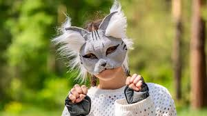
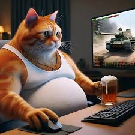
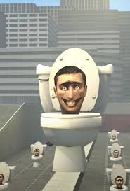

Всім привіт сьогодні ви отримаєте +1 до кашого айкю і дізнаєтесь хто такі скуфи.Скуфи це люди які люблять попити пиво та пограти в танки э 2 вида скуфів 1 вид це скуфи чоловіки,а другий вид це скуфи котики (вони дуже милі).Молодець ти прочитав цей текст і отримав декілька айкю.

Також я розповім хто такі квадробери і спочатку хочу зауважити що всі мають хвіст.Почнемо хто ж такі квадробери це діти які переодягаються в тварин та бігають на четвереньках по парках або просто по вулицях.Якщо ви бачете квадробера бажано або втікати або кричати на допомогу.Якщо ви всетаки стане квадробером краще бути доглянутим і слухняним котиком.

Зараз я розповім вам хто такі скібеді туалети.Це голови в унітазах які можуть рухатись та агенти які зібрані з техніки замість голови.
